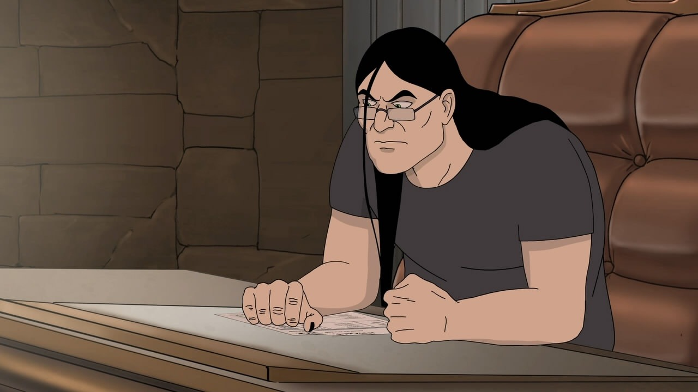

Howdy :))
This is an experimental project, a personal blog of Yiwei Ye.
I'm a current graduate student in UT Austin working on a Ph.D. degree of Civil Engineering. But since you see this, appearently I'm not only a civil engineer, but also an independent developer.
Apart from programming and research I also like rock, drawing, fishing, cooking, crafting.
In short, I like exploring this world. I will share some cool project or research here, and maybe also other interesting things that I learn!

For more infomation you can check About